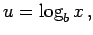

Inhalt Index DeskTop Bronstein

 Arithmetik Elementare Rechenregeln Potenzen, Wurzeln, Logarithmen Logarithmen
Arithmetik Elementare Rechenregeln Potenzen, Wurzeln, Logarithmen Logarithmen


Unter dem Logarithmus einer Zahl x > 0 zur Basis oder als Formel geschrieben  wird der Exponent der Potenz verstanden, in die b zu erheben ist, um die Zahl x zu erhalten. Folglich ergibt sich aus der Gleichung
| bu = x | (1.21a) |
die Gleichung
| (1.21b) |
und umgekehrt folgt aus der zweiten die erste Gleichung. Speziell gilt
| (1.21c) |
Zur Ausdehnung des Logarithmus auf negative Argumentwerte bedarf es der komplexen Zahlen.
Logarithmieren einer gegebenen Größe bedeutet das Aufsuchen ihres Logarithmus. Man versteht darunter auch die Umwandlung logarithmischer Ausdrücke gemäß (1.22a, 1.22b). Das Aufsuchen einer Größe aus ihrem Logarithmus wird Potenzieren genannt.